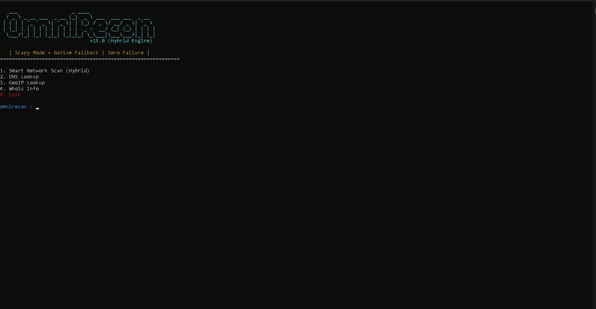

🔍 Omni-Recon: Automated Reconnaissance
Automating the process of information gathering to identify digital footprints efficiently.
Objective & Overview
Omni-Recon ka primary goal reconnaissance phase ko automate karna hai. Ye tool multiple discovery tools ko combine karke ek single report generate karta hai, jo manual effort ko 70% tak kam kar deta hai.

Key Features & Modules
- Subdomain Enumeration: Integrating tools like Sublist3r for deep discovery.
- Port Analysis: Automated Nmap scans for service and version detection.
- Whois Lookup: Gathering domain registration details instantly.
View Project on GitHub
← Back to Selection